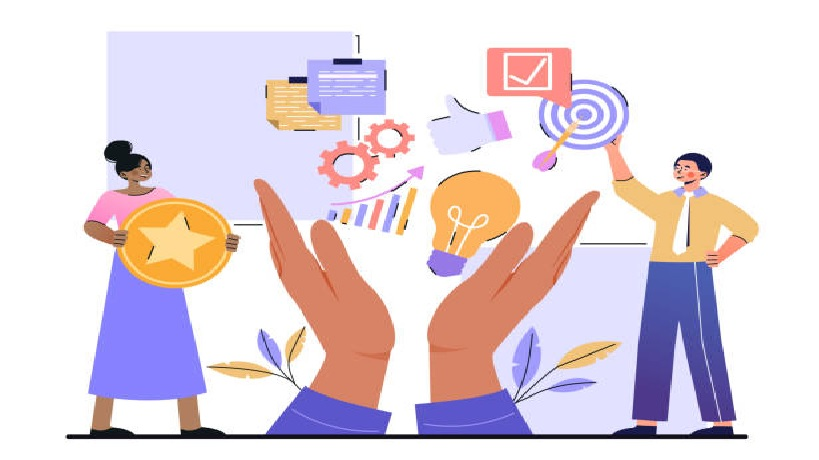

Hola soy Cintia, tengo 37 años
Soy una persona muy sociable y curiosa.
Me gusta formarme continuamente y buscar
nuevas herramientas para aplicar en mi vida.
Objetivos
Mis objetivos son lograr un desarrollo y descubrimiento
de mis habilidades para aplicarlas cada dia. Busco en mi
la profesionalizacion de todas mis actividades para tener
siempre una meta a cumplir.
Perfil
Experiencia administrativa, manejo de personal
Responsable de area recursos humanos.
Manejo de herramientas de gestion de
procesos administrativos para
diferentes organizaciones.
Cintia Analia Perez
Lic. Administración de Empresas
Formación Academica
Gestora administrativa y Judicial Colegio de Gestores suc MDP.
Tecnica Superior en Recursos HumanosISFT 204 Prov. Bs As.
Ciclo pedagogico profesionalCursando hasta 10-2021 modalidad virtual.
Licenciatura en Administracion de empresas Finalizando 11-2021 modalidad virtual.
NIvel de Ingles Basico
Habilidades
Buena comunicacion escrita y verbal.
Manejo de herramientas de gestion.
Capacidad de liderazgo
Trabajo proactivo.
Herramientas de gestion.
Solucion de problemas y conflictos
Experiencia Laboral
Junio 2017- ACTUAL
Encargada administrativa de sucursal
Gestiones administrativas, cliente interno y externo
Empresa: Rivera Rodamientos Mar del Plata.
Marzo 2016- Mayo 2017
Mando Medio area RRHH
Manejo de area administrativa y del personal Empresa: Grupo Favacard
Enero 2013- Febrero 2016.
Encargada dpto de RRHH
Acargo del area administrativa y del personal
Empresa: Grupo Ceres Tolvas Tandil
Septiembre 2004- Enero 2013
Encargada estudio contable.
Encargada estudio contable
Responsable administrativa contable
Empresa:CPN Ovies Marcelino
Formación Academica HabilidadesExperiencia Laboral